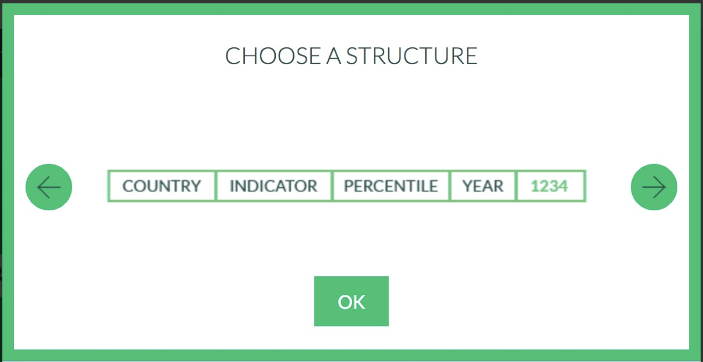

wid_data <- read_xlsx("world_wealth_inequality.xlsx")Module 4: Data Manipulation
This lesson is about making sure students can access and manipulate their data. We will introduce the pipe operator and how can they can use it to organize their code. We will discuss several important dplyr functions and their usefulness in data manipulation and analysis.
Data Manipulation
Download a copy of Module 4 slides
Download data for Module 4 lab and tutorial
Lab 4
In this lab, you will work with 2 data sets (world_wealth_inequality.xlsx and midwest.dta).
General Guidelines:
You will encounter a few functions we did not cover in the lecture video. This will give you some practice on how to use a new function for the first time. You can try following steps:
- Start by typing
?new_functionin your Console to open up the help page - Read the help page of this new_function. The description might be too technical for now. That’s OK. Pay attention to the Usage and Arguments, especially the argument
xorx,y(when two arguments are required) - At the bottom of the help page, there are a few examples. Run the first few lines to see how it works
- Apply it in your lab questions
It is highly likely that you will encounter error messages while doing this lab Here are a few steps that might help get you through it.
- Locate which line is causing this error first
- Check if you may have a typo in the code. Sometimes another person can spot a typo faster than you.
- If you enter the code without any typo, try googling the error message
- Scroll through the top few links see if any of them helps
- Try working on the next few questions while waiting for answers by TAs
Warm-up
- Which of these are commands from
dplyr?
mutate()filter()mean()
In the videos, you learned about
head(). What if you wanted to get the tail end of your data instead?Imagine you have a data set,
dfwith 4 variables,county,year,income, andemployment. You only need the year and employment status of people whose income is below $5000. Which twodplyrcommands do you need to do this? Can you write the code for this?Remember the
mean()function? Whatdplyrcommands would we need if we want the average income in counties for the year 2003? Can you write the code for this?Load
tidyverse,haven, andreadxlin your Rmd. If you haven’t yet, download the data from this page and put the data in your data folder and set your working directory. The data source is the World Inequality Database where you can find data about the distribution of income and wealth in several contries over time. Outside of lab time, check out wid.world for more information.If you followed the set-up from above, you should be able to run the following code with no error.
Examining ’wid_data
Look at the data. What is the main problem here?
We don’t have columns headers. The World Inequality Database says the “structure” of the download is as shown in the image below.

So we can create our own header in read_xlsx. Calling the read_xlsx function using readxl::read_xlsx() ensures that we use the read_xlsx() function from the readxl package.
wid_data_raw <- readxl::read_xlsx("world_wealth_inequality.xlsx",
col_names = c("country", "indicator",
"percentile", "year", "value"))Now when we look at the second column. It’s a mess. We can separate it based on where the \n are and then deal with the data later. Don’t worry about this code right now.
wid_data_raw <- readxl::read_xlsx("world_wealth_inequality.xlsx",
col_names = c("country", "indicator",
"percentile", "year",
"value")) %>%
separate(indicator, sep = "\\n", into = c("row_tag", "type", "notes"))Note: We want a clean reproducible script so you should just have one block of code reading the data: that last one. The other code were building blocks. If you want to keep “extra” code temporarily in your script you can use # to comment out the code.
Manipulating World Inequality Data with dplyr
Now we have some data and are ready to use select(), filter(), mutate(), summarize() and arrange() to explore it.
The data comes with some redundant columns that add clutter when we examine the data. What
dplyrverb let’s you choose what columns to see? Remove the unwanted columnrow_tagand move notes to the last column position and assign the output to the namewid_data1Let’s start to dig into the data. We have two types of data: “Net personal wealth” and “National income”. Start by
filter()ing the data so we only have “Net personal wealth” for France, name the resulting datafrench_dataand then run the code below to visualize the data.
# replace each ... with relevant code
french_data <- wid_data %>% filter( ... , ...)Note: When refering to words in the data, make sure they are in quotes “France”, “Net personal wealth”. When referring to columns, do not use quotes.
french_data %>%
ggplot(aes(y = value, x = year, color = percentile)) +
geom_line()Now we’re getting somewhere! The plot shows the proportion of national wealth owned by different segements of French society overtime. For example in 2000, the top 1 percent owned roughly 28 percent of the wealth, while the bottom 50 percent owned abouy 7 percent.
Explain the gaps in the plot. Using
filter(), look at french_data in the years between 1960 and 1970. Does what you see line up with what you guessed by looking at the graph?Using
mutate(), create a new column calledperc_national_wealththat equals value multiplied by 100. Adjust the graph code so that the y axis showsperc_national_wealthinstead of value.Now following the same steps, explore data from the “Russian Federation”.
The data for “Russian Federation” does not start in 1900, but our y-axis does. That’s because we have a bunch of
NAs. Let’s filter out theNAs and remake the plot. You cannot test forNAusing==(Try:NA == NA). Instead we have a function calledis.na(). (Try:is.na(NA)and!is.na(NA)).Use two
dplyrverbs to figure out what year the bottom 50 percent held the least wealth. First, choose the rows that cover the bottom 50 percent and then sort the data in descending order usingarrange()2.
# replace ... with relevant code
russian_data %>%
filter(...) %>%
arrange(...)- For both the Russian Federation and French data, calculate the average proportion of wealth owned by the top 10 percent over the period from 1995 to 2010. You’ll have to
filterand then summarize withsummarize().
# replace ... with relevant code
russian_data %>%
filter(...) %>%
summarize(top10 = mean(...))Manipulating Midwest Demographic Data with dplyr
Now we’ll use midwestern demographic data which is at this link. The dataset includes county level data for a single year. We call data this type of data “cross-sectional” since it gives a point-in-time cross-section of the counties of the midwest. (The world inequality data is “timeseries” data).
Save
midwest.dtain your data folder and load it into R.
midwest <- read_dta('midwest.dta')- Run the following code to get a sense of what the data looks like:
glimpse(midwest)- I wanted a tibble called
midwest_popthat only had county identifiers and the 9 columns from midwest concerned with population counts. Replicate my work to createmidwest_pop onyour own3.
names(midwest_pop) [1] "county" "state" "poptotal" "popdensity"
[5] "popwhite" "popblack" "popamerindian" "popasian"
[9] "popother" "popadults" "poppovertyknown"Hint: I went to ?select and found a selection helper that allowed me to select those 9 columns without typing all their names
# replace ... with relevant code
midwest_pop <- midwest %>% select(county, state, ...)From
midwest_popcalculate the area of each county4. What’s the largest county in the midwest? How about in Illinois?From
midwest_popcalculate percentage adults for each county. What county in the midwest has the highest proportion of adults? What’s county in the midwest has the lowest proportion of adults?How many people live in Michigan?
Note that together population density and population can give you information about the area (geographic size) of a location. What’s the total area of Illinois? You probably have no idea what the units are though. If you google, you’ll find that it doesn’t align perfectly with online sources. Given the units don’t align with other sources, can this data still be useful?
Well done! You’ve learned how to work with R to perform simple data manipulation and analysis!
Want to improve this tutorial? Report any suggestions/bugs/improvements on here! We’re interested in learning from you how we can make this tutorial better.